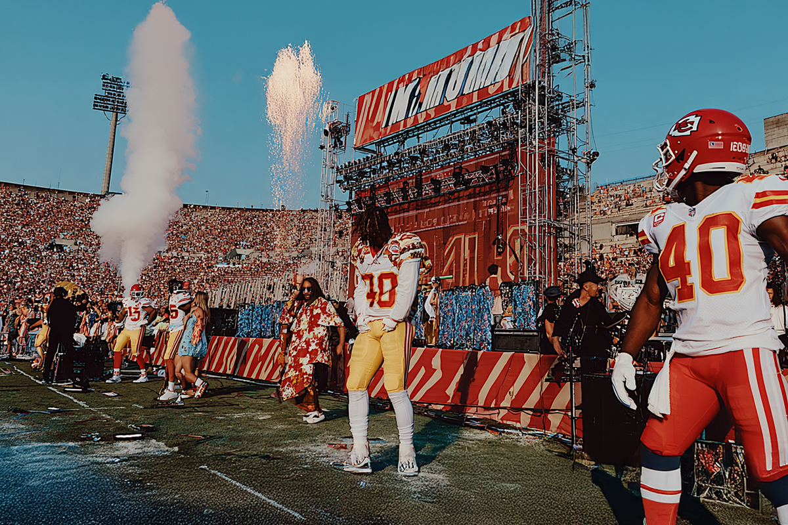
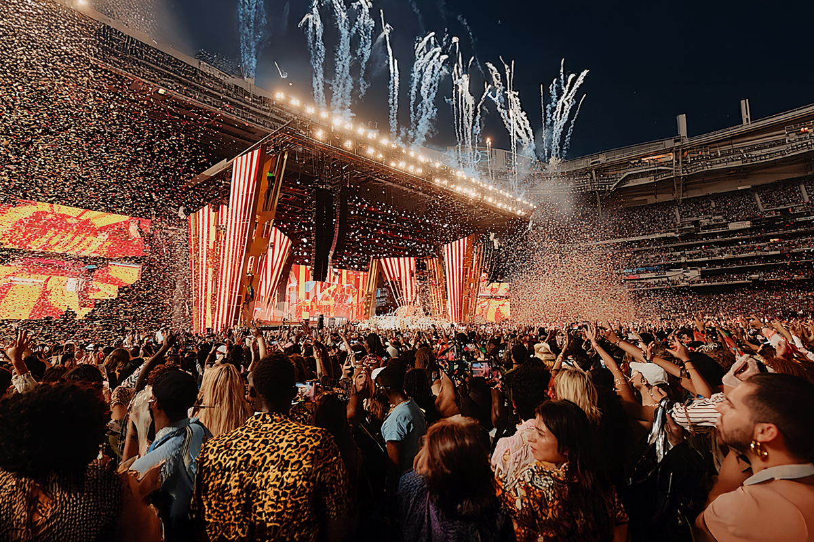
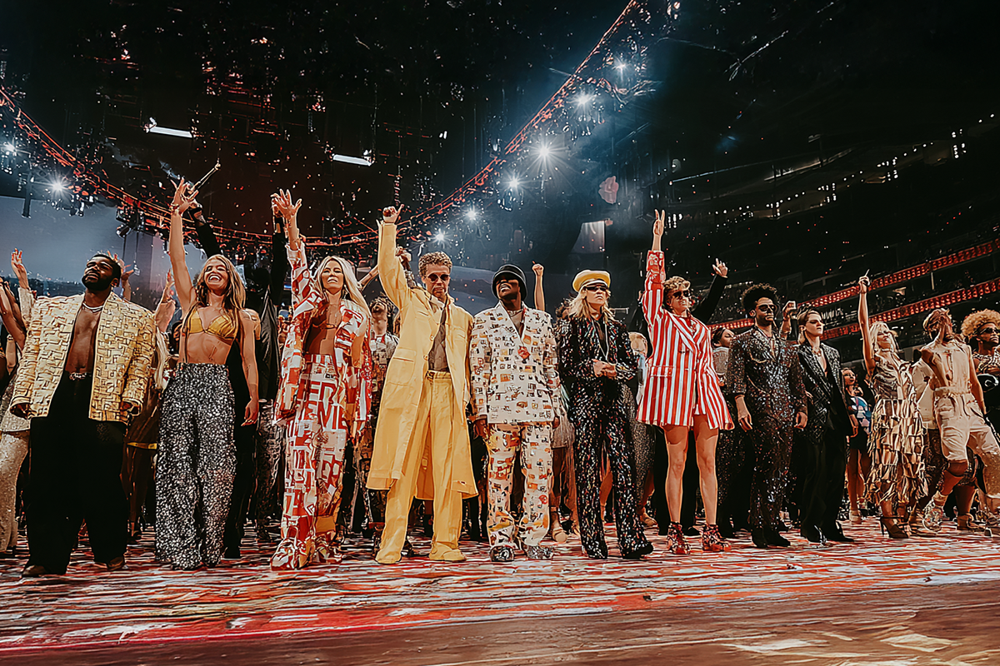
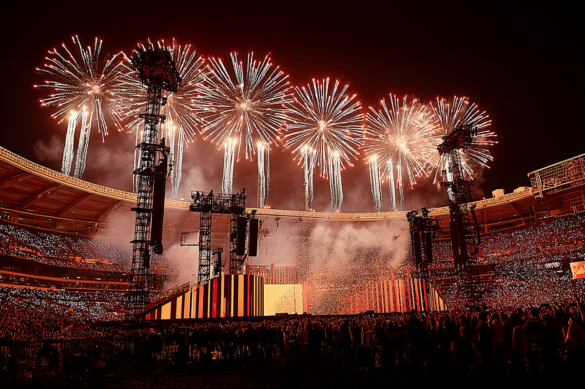
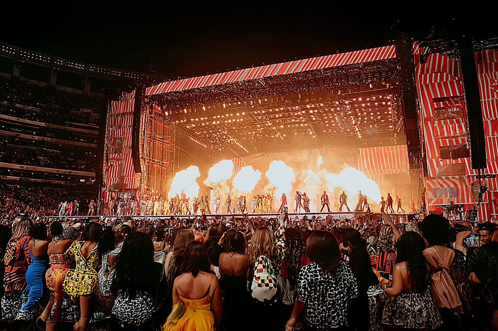
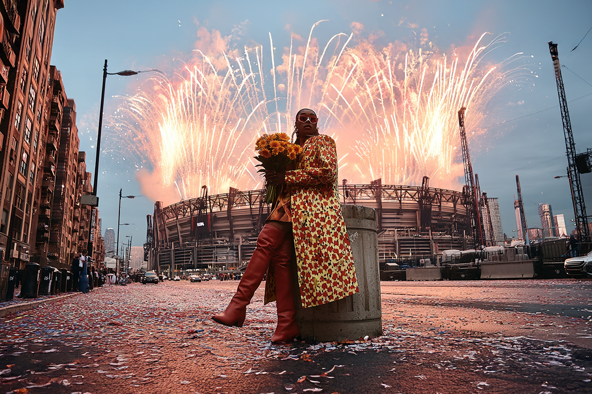
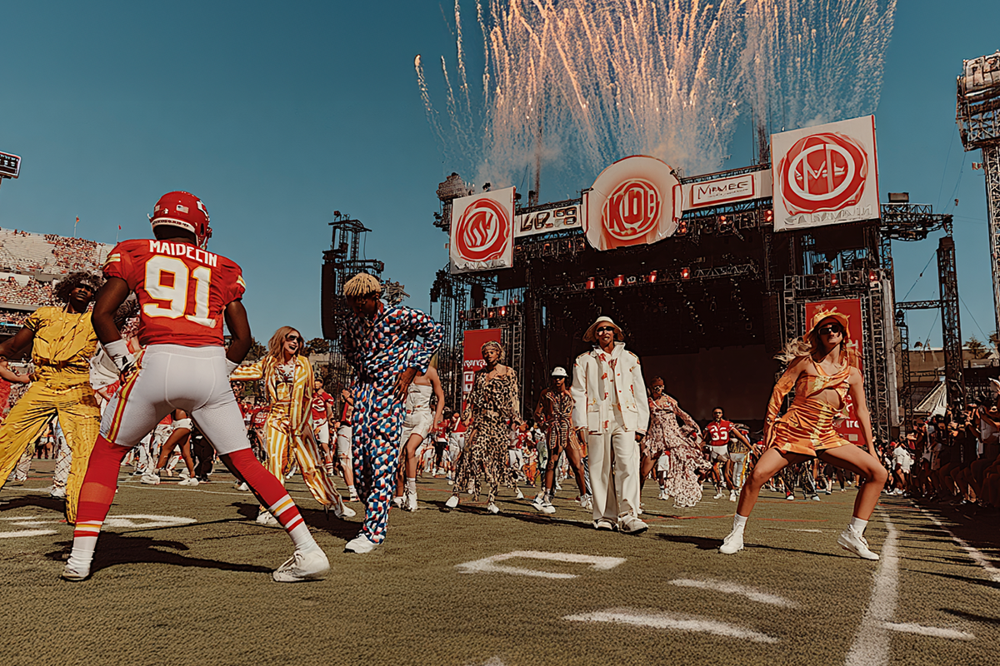
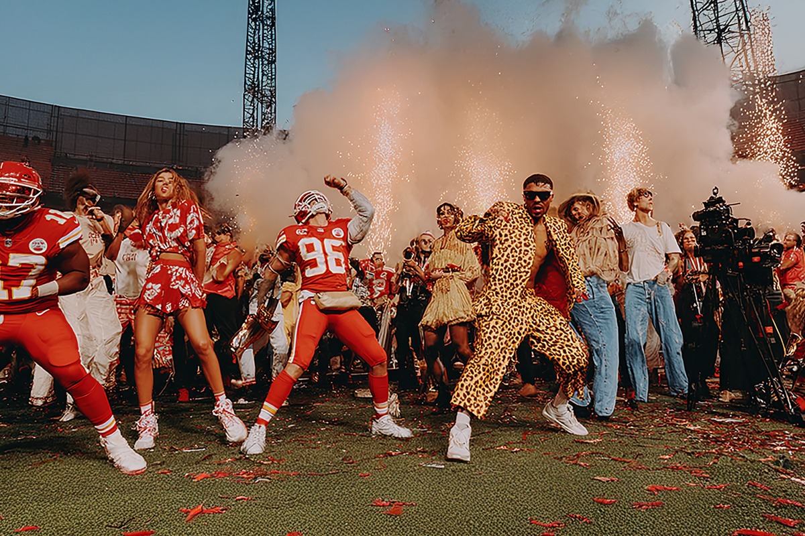

¿Preparándote para el show del Super Bowl?
Acá te dejamos una lista con los mejores halftime shows de este evento deportivo
Acá te dejamos una lista con los mejores halftime shows de este evento deportivo

Hace unos días se informó con un par de vídeos oficiales que el puertorriqueño Bad Bunny será el protagonista del show de medio tiempo del Super Bowl LIX, el evento más importante de fútbol americano y que suele reunir a miles de personas en sus estadios y a millones de personas tras las pantallas.
En su versión 2026, este espectáculo del deporte (y de pasada, de la música), tendrá como centro el Levi’s Stadium en Santa Clara, California y se llevará a cabo el próximo 8 de febrero.

Para que se hagan una idea de la relevancia del Super Bowl, este año, cuando se presentó el rapero Kendrick Lamar en el show de medio tiempo, un total de 133,5 millones de personas fueron testigos en vivo de este mini concierto, sobrepasando el récord de audiencia para este espectáculo, que tuvo su primera transmisión televisada, en 1967.
Dejando de lado la presencia de Bad Bunny, una de las figuras de la música más relevantes de la música popular actual (y del que puedes conocer un poquito más en el siguiente link), no podemos dejar de considerar la importante vitrina que el Super Bowl es para la música. Por eso, en Compara, les dejamos una pequeña lista con algunos de los shows de medio tiempo más relevantes en la historia del evento.

Uno de los eventos más relevantes y que dio el puntapié inicial a lo que serían los shows de medio tiempo al nivel de cómo los conocemos ahora, debería ser el del Rey del Pop, Michael Jackson.
El espectáculo del cantante y bailarín empieza con una ovación increíble del público, de aproximadamente dos minutos, donde Jackson literalmente sólo está de pie en una de sus poses características.
En este show, que duró poco más de 12 minutos y fue visto por más de 133 millones de personas, el artista repasó brevemente algunos de sus más grandes éxitos, realizando un mash up con una producción de primer nivel donde incorporó canciones como Jam, Billie Jean, Black or White, We Are the World (con un coro de niños, para hacerlo todo un poquito más épico) y Heal the World.
Puedes ver el vídeo completo por acá.

Increíble darnos cuenta de que ya ha pasado casi una década desde el halftime show de Lady Gaga en el Super Bowl. Un espectáculo de tremendas dimensiones y que catapultó a Gaga a un estrellato que iba mucho más allá del mainstream y del amor de sus Little Monsters.
El 5 de febrero de ese año, cuando se enfrentaban los Atlanta Flacons contra los New England Patriots, Lady Gaga armó un espectáculo de casi 14 minutos de duración donde visitó algunos de sus hits más importantes ante un desenfrenado público.
El popurrí comenzó con una rendición al himno God Bless America para después darle espacio a canciones como Pocker Face, Born This Way, Telephone, Just Dance y Million Reasons. Fue un show vibrante, pero sin mayores extravagancias, tan propias de Gaga.
Acá puedes revisar su espectáculo.

Este año presenciamos el show del Superbowl más visto en la historia del juego. Lo que hizo el NFL fue bastante inteligente: le entregó una plataforma de características globales a un rapero que se encontraba en pleno conflicto con otro artista: Drake.
Lamar logró el récord de audiencia en la historia de este evento deportivo, congregando a más de 134.5 millones de televidentes, superando el récord antes establecido por el rey del pop. Cabe destacar que no sólo se transmitió en la televisión, sino en otras plataformas de streaming.
Kendrick presentó algunos de los grandes hits de su carrera en un show sin demasiada “parafernalia” pero, como siempre, contundente en su lírica. Además, contó con las colaboraciones de SZA, la deportista Serena Williams y el reconocido actor Samuel L. Jackson.
Puedes revisar el show en el siguiente link.

Nostalgia e historia. Creo que esas son de las dos palabras que se nos vienen a la mente cuando nos referimos al halftime show del Super Bowl que tuvo como protagonistas a la realeza del hip-hop de West Coast, parte de uno de los movimientos contraculturales urbanos más relevantes de las décadas del 80 y 90.
Liderados por el productor, músico y rapero Dr. Dre, este TREMENDO show contó con la presencia de las leyendas Snoop Dogg, Eminem, Mary J. Blige, Kendrick Lamar y 50 Cent, quienes también fueron acompañados por el músico Anderson .Paak en la batería.
Haciendo una cronología a su evolución e historia en sus propios territorios, este show fue el primer acto de hip-hop en la historia de este evento.
¿Qué canciones sonaron? La lista fue inmaculada: "The Next Episode", "California Love", "In Da Club", "Family Affair", "No More Drama", "m.A.A.d City/Alright", "Forgot about Dre", "Lose Yourself" y "Still Dre". Y de ahí no se podía pedir mucho más.
Uno de mis shows favoritos en la historia de este torneo, lo puedes ver en el siguiente enlace.

Según The Weeknd, este es el mejor show de medio tiempo en la historia del Super Bowl, y podemos entender por qué.
La icónica cantante Diana Ross sacó todo su divismo en un impecable espectáculo que repasó sus grandes éxitos junto a The Supremes, trío clásico del Motown que la llevó a la fama en los años 60’s.
Fue en Arizona, en un concierto que se tituló Take Me Higher: A Celebration of 30 Years of the Super Bowl donde la cantante interpretó un popurrí de 10 canciones, de las cuales podemos destacar Stop! In the Name of Love, You Keep Me Hangin’ On , Ain’t No Mountain High Enough, I Will Survive y Take Me Higher. Con esta última canción nos queremos quedar, porque Ross tomó las cosas de manera literal y, con tal de llegar más alto, al finalizar su show un helicóptero bajó del cielo y se llevó a la cantante, así no más.
¿Quieres ver este maravilla? No te preocupes, que acá te dejo el link.

Si hablamos de performance, Beyoncé debe estar en el tope del juego. Así lo volvió a demostrar el 2013, cuando se hizo cargo del show de medio tiempo de ese año, en New Orleans.
La cantante no sólo impactó con una puesta en escena de otro planeta, coreografías espectaculares y un rango vocal de alto impacto, sino que tenía un particular as bajo la manga: Destiny’s Child.
El otrora trío, tan popular en los 90’s y en los principios del 2000, fue la piedra angular en la carrera de Beyoncé. Sin embargo, la cantante se separó del grupo oficialmente el 2006, después de haber experimentado una exitosa trayectoria en solitario.
Algunas de las canciones que interpretó la artista fueron las ya clásicas “Run the World (Girls)”, “Crazy in Love” y “Baby Boy”. Fue después de esta lista que Kelly Rowland y Michelle Williams se subieron al escenario para cantar “Bootylicious”, “Independent Women Part I” y “Single Ladies (Put a Ring On It)”, siendo esta la primera reunión del trío después de su disolución. Finalmente, Beyoncé cerró con una emotiva versión de “Halo”.
Revisa el show acá.

No podíamos cerrar esta lista sin nombrar a unas de las más grandes figuras del pop, la leyenda que es Prince.
Un músico y cantante excepcional, Prince logró un show de medio tiempo redondo, con una banda instrumental que lo dio absolutamente todo y donde sacó a relucir sus más grandes talentos, sin tapujos.
Era el 2007 y en Florida, durante una tormenta, otra tormenta pisaba el escenario del Dolphin Stadium. El cantante abrió asegurado y de manera épica, calentando el ambiente con We Will Rock You de Queen.
Lo interesante de su setlist, es que Prince, a pesar de su contundente discografía, escogió realizar diferentes covers como Baby, I'm a Star Proud Mary (original de Creedence Clearwater Revival), All Along the Watchtower (original de Bob Dylan) e incluso rodeando lo más moderno, con Best of You (original de Foo Fighters) y sólo interpretó dos canciones propias, Let’s Go Crazy y, por supuesto, Purple Rain.
Este espectáculo fue un tremendo lujo. Elegante, poderoso y lleno de carisma, fiel representación de lo que fue la trayectoria en vida del cantante. Puedes revisarlo acá.
¿Qué show de medio tiempo del Super Bowl ha sido tu favorito?
 Cultura
CulturaSé que suena raro hablar de calor extremo mientras en Chile todos están buscando la parka más gruesa del clóset.
 Cultura
CulturaEl hecho de que estemos entrando al mes de julio no se puede creer. Pero lo que tampoco se puede creer es la cantidad de artistas que han…
 Cultura
CulturaCuando hablamos de trabajos clásicos de la música chilena, siempre se nombran los discos de Violeta Parra, Víctor Jara, Los Jaivas o…